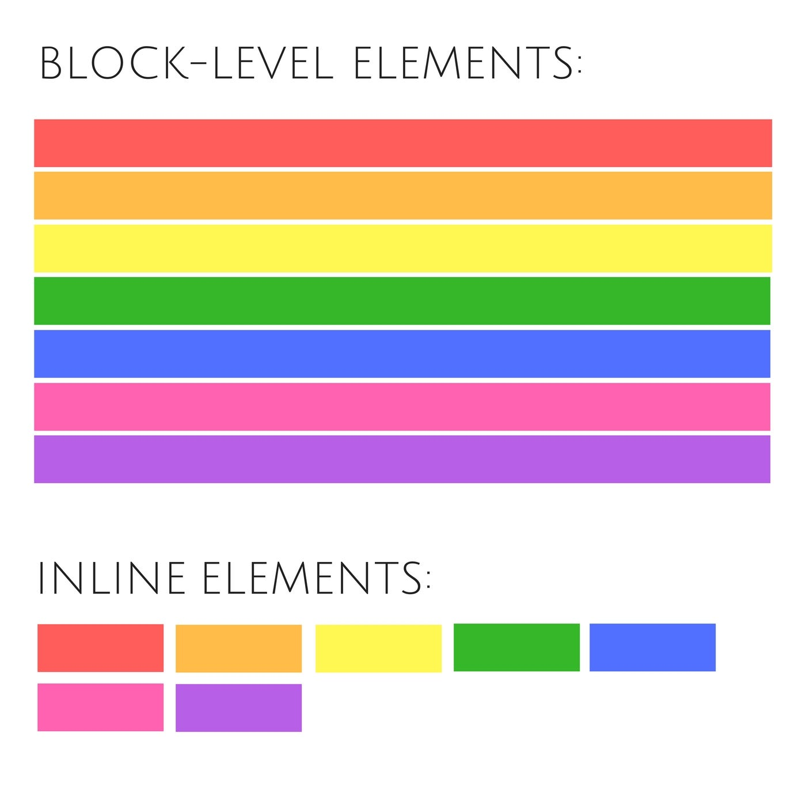
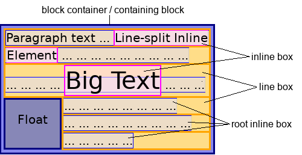

-
Mit jelent, hogy HTML elem blokkszintű (block-level)?

-
A blokkszintű elemek mindig új sort kezdenek,
azaz egymás alá kerülnek, függetlenül attól,
hogy milyen szélesek.
-
Alapértelmezetten az oldal egész szélességét
használják. Vagy annyit amennyi meg van adva.
- Tartalmazhatnak más elemeket.
- Blokkszintű elemek a HTML-ben.
-
Mi az a div elem?

-
A div elem univerzális tartóeleme a HTML kód egy
jól körülhatárolható részének.
-
Gyakran használják egy weboldal szakaszainak
csoportosítására.
- Blokkszintű elem.
-
Mit jelent, hogy HTML elem beágyazott (inline)?

-
A beágyazott elemek nem kezdenek új sort, azaz
egymás mellé kerülnek, függetlenül attól, hogy
milyen szélesek.
-
Alapértelmezetten annyi helyet foglalnak el
amennyire szükségük van. Vagy annyit amennyi meg
van adva.
-
Tartalmazhatnak más elemeket. DE NEM AJÁNLOTT,
MERT NAGYON SZÉTESHET AZ OLDAL STRUKTÚRÁJA!
- Beágyazott elemek a HTML-ben.
-
Mi az a span elem?
-
A span elem univerzális tartóeleme a HTML kód
szövegének egy jól körülhatárolható részének.
- Beágyazott elem.